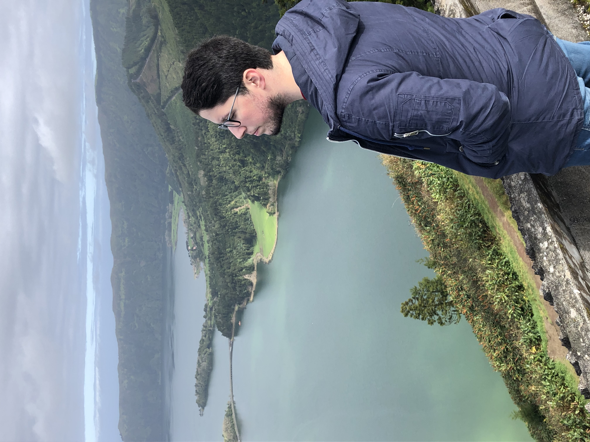
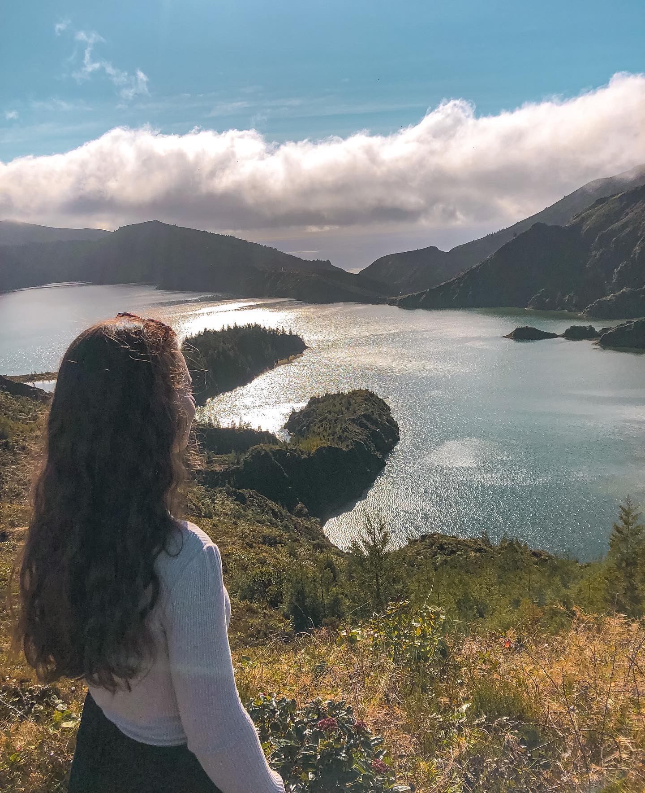
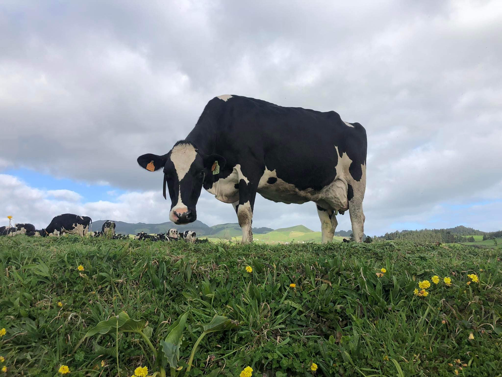
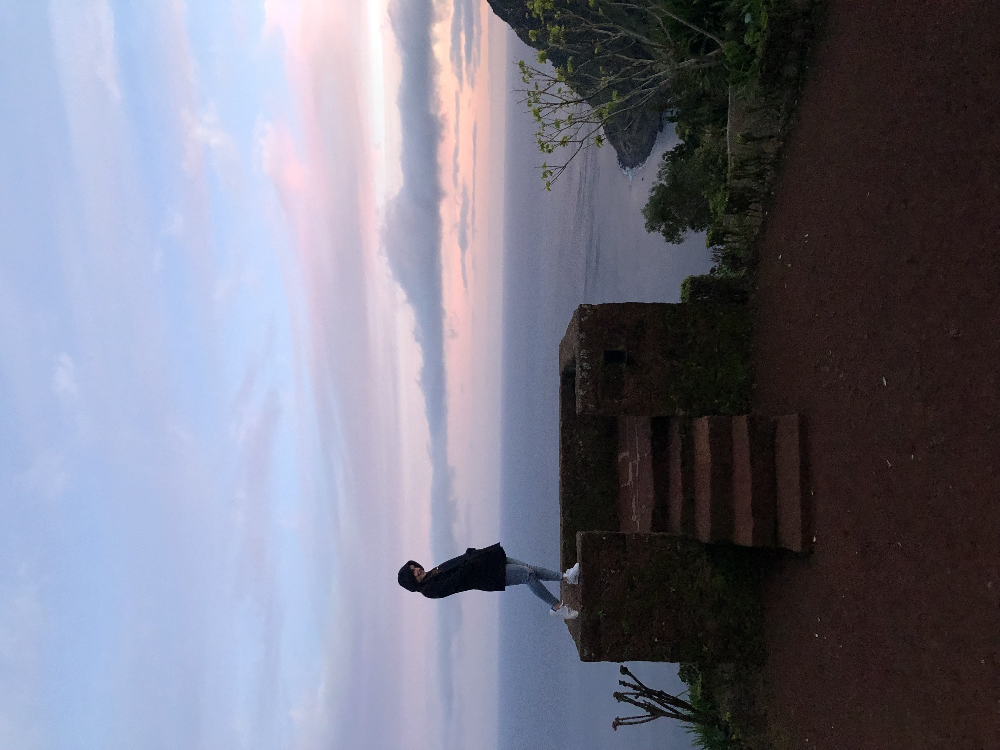

A Lenda da princesa e do pastor no reino das Sete Cidades é uma tradição oral da ilha de São Miguel, nos Açores. Versa sobre a origem das lagoas da caldeira do vulcão das Sete Cidades que, apesar de unidas, têm duas cores diferentes, sendo uma verde e outra azul.Lê mais

02
____ LAGOA DO FOGO
Conexão Com a Natureza
A Lagoa do Fogo fica dentro de uma cratera de um vulcão, em cima de uma das maiores montanhas da ilha. Foi formada há cerca de quinze mil anos com a erupção vulcânica do vulcão do fogo, conhecido também como vulcão de Água de Pau, e é a mais recente da ilha. Localizada a 575 metros e ocupando uma área de 1360 hectares chama muito atenção pela cor da sua água, um azul de tirar o fôlego.Lê mais

03
____TERRA NOSTRA
Quentinho, quentinho...
O Parque Terra Nostra é rodeado por caldeiras e nascentes de águas que emergem do solo. É um dos locais imperdíveis nas Furnas. A nascente de água termal que alimenta o tanque, a uma temperatura entre os 35 e 40 graus, proporciona uma sensação de repouso e relaxamento como poucos sítios no Mundo.Lê mais
04
____ GRANDES HERBÍVOROS
Vacas até dar com um pau
É verdade que existem mais vacas que pessoas? Às vezes é difícil destrinçar. Mas segundo os últimos dados (2009) existem 248.763 “vacas” e 245.283 pessoas nos Açores.Lê mais

05
____ GATOS E MAIS GATOS
Ponta do Sossego
O Miradouro da Ponta da Madrugada tem este nome por ser considerado o melhor local da Ilha de São Miguel para observar o nascer do Sol. Com uma vista para a Serra da Tronqueira, este miradouro dispõe de vários jardins com diversas flores das mais variadas espécies que decoram todo o espaço assim como grnades quantidades de gatos dorminhocos.Lê mais

06
____ CHÁ E CHOQUES..
Chá Gorreana
Localizada na ilha de São Miguel, Açores, a Fábrica de Chá Gorreana é a mais antiga fábrica de chá na Europa, ainda em funcionamento. O clima húmido e chuvoso, as temperaturas amenas, bem como o solo acido e vulcânico, permitiram a produção de um chá verde e preto de qualidade.Lê mais
07
____ Ananás
Plantação de ananás dos açores
Com mais de 150 anos de história, o Ananás dos Açores é um fruto de
Denominação de Origem Protegida (DOP), produzido exclusivamente na Ilha de São Miguel. Existem por volta de 230 produtores de ananás na ilha e são produzidos entre 700 a 1000 toneladas deste fruto anualmente.Lê mais